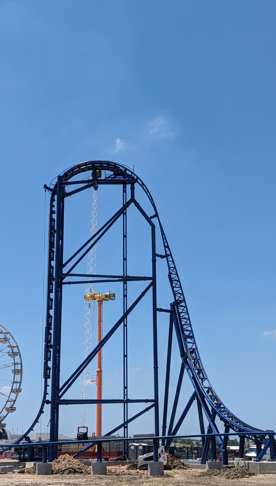
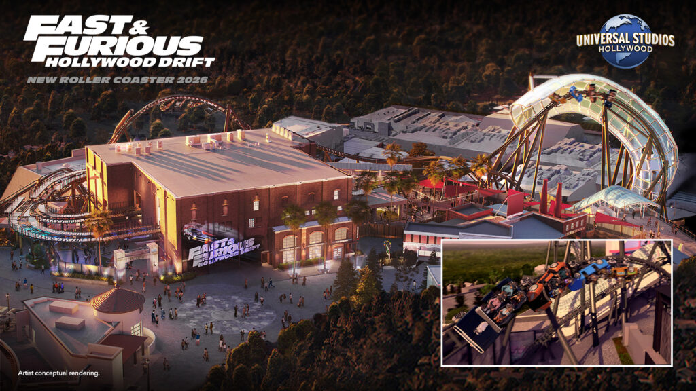
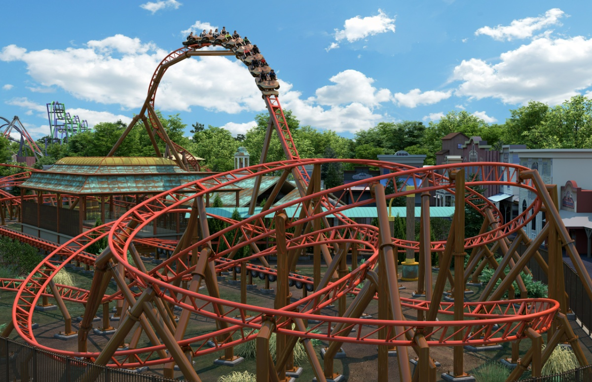

This is Circuit Breaker, a Vekoma Tilt Coaster, meaning the track physically tilts to connect itself to a 90 degree drop. It will be only the second of its kind to open in the United States and feature 4 inversions, inlcuding a rollover camelback which has never been featured on a roller coaster in the United States.
This is Palindrome, a shuttle coaster built by Gertslauer Amusement Rides. This ride will have a vertical lift hill rising up to a height of 95 feet, feature 1230 feet of track, and reach 4.5 G force.
This is Fast and Furious Hollywood Drift, which will probably be the best roller coaster on this list. This will be built at a Universal park and manufactured by Intamin Amusement Rides, two companies that teamed up to create VelociCoaster, one of the most highly regarded roller coasters in the world and my personal favorite. This ride has similar stats to VelociCoaster, having 4100 feet of track and reaching a top speed of 72 miles per hour, but the main difference is that this ride has rotating or "drifting" cars that will allow riders to experience elements sideways or backwards.
This is Quantum Accelerator, an Intamin tire drive launch coaster opening at Six Flags New England. This ride is more family friendly than the others, so the stats aren't as crazy, only hitting 59 feet tall and 49 miles per hour. But it still looks like it will deliver a quality ride experience with a more accessible thrill level.

This is Tormenta Rampaging Run, a record breaking dive coaster opening at Six Flags Over Texas. This is the one we heard about the most recently; it was announced less than a week ago. It is also the roller coaster on this list with the most impressive stats, reaching a height of 309 feet, holding you over a 285 foot drop, and reaching a top speed of 87 miles per hour, which will make it the 7th tallest and 12th fastest roller coaster in the world when it opens.